Overview
The problem with every litter solution on the market
Cat owners go through the same journey. The litter box starts in the bathroom — out of sight, but litter ends up everywhere, so you buy a mat that barely helps. The mess and smell becomes unbearable, so you invest in an enclosure. Now it looks cleaner, but the mat is still there, the litter waste bin is still sitting out in the open, and your setup still occupies a disproportionate footprint in your home.
Every enclosure on the market solves only one thing: hiding the litter box. None address where the waste bin goes, how litter gets tracked beyond the entrance, or what the product looks like in a real living room. Most are styled with cat-themed cutouts and barn-door silhouettes — decorative signals that announce rather than conceal their purpose.
"Imagine a piece of furniture you'd put in your hallway that also happened to contain everything cat litter–related — and guests would never know it."
This project set out to design exactly that.
The Challenge
Four problems, no complete solution
Existing products treat these as separate issues. This design treats them as one system.
It doesn't look like furniture
Cat-themed cutouts and rustic barn styling signal their purpose immediately. No current product could blend into a modern living room or hallway.
Exposed waste storage
Every enclosure hides the litter box. None account for the dedicated waste bin (Litter Genie, Litter Zero) that lives right next to it.
Litter tracking
No mat or enclosure stops cats from carrying litter beyond the exit. The problem isn't the type of litter you use — it's exit path geometry.
Wasted real estate
A litter box enclosure, mat, and waste bin together consume significant floor space with zero storage return for the owner.
Competitive Analysis
What the market actually offers
A review of top-selling litter enclosures on Amazon, Chewy, and Wayfair revealed that every product makes the same scoping decision: hide the litter box, ignore everything else.
| Photo | Product | Furniture aesthetic | Hides waste bin | Litter trapping | Extra storage | Price |
|---|---|---|---|---|---|---|
|
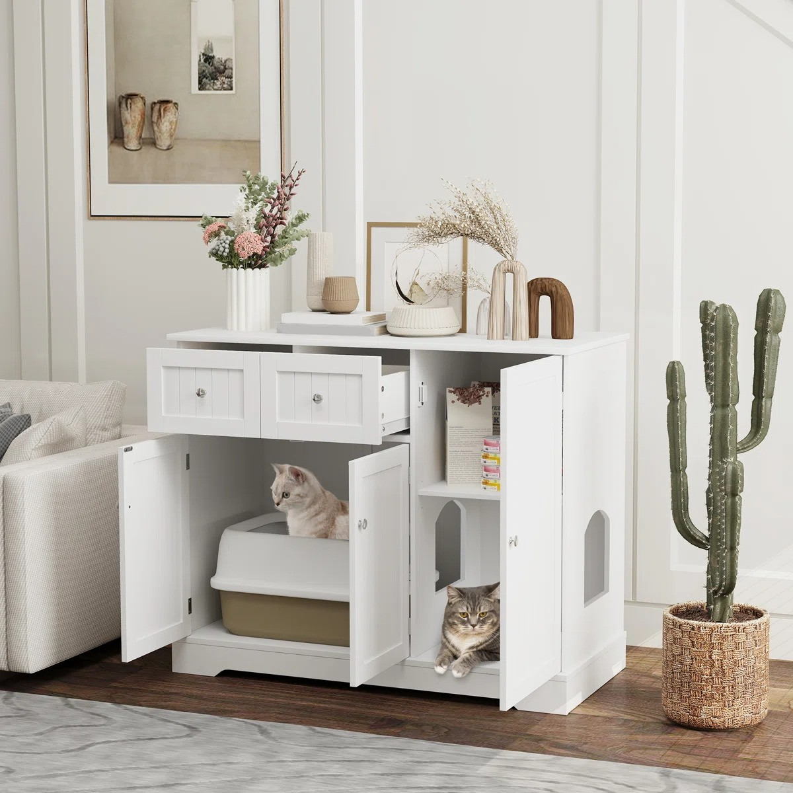 |
Tucker Murphy Pet | ✓ | ✗ | ✓ | ✓ |
Mid $190 |
|
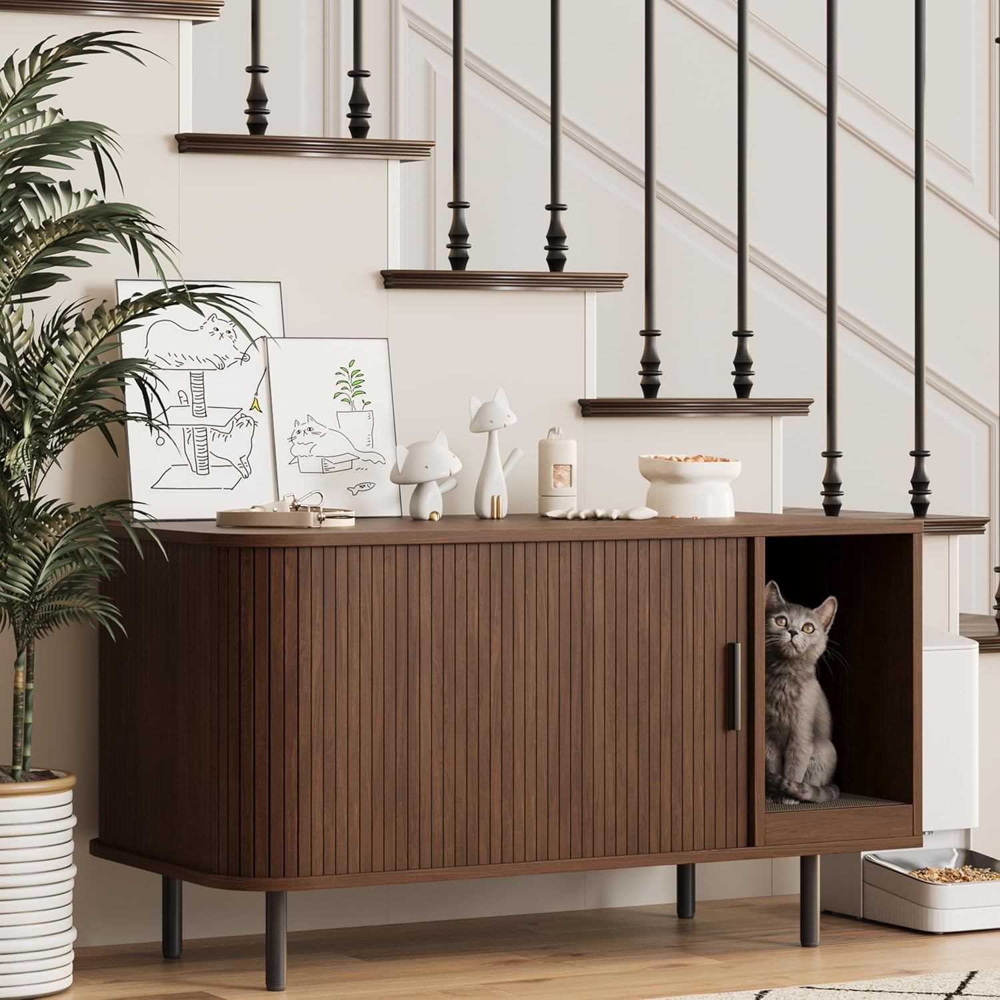 |
Halitaa | ✓ | ✗ | ✓ | ✗ |
Budget $110 |
|
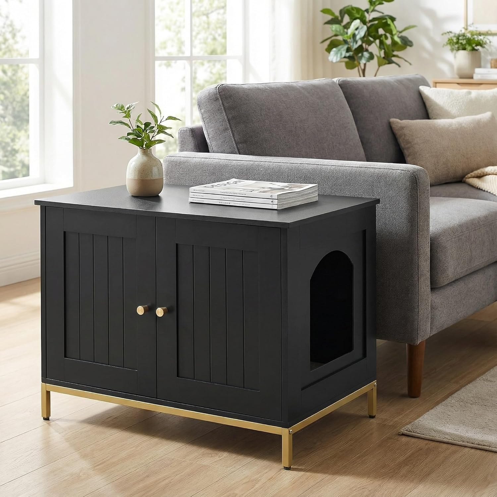 |
Homhedy | ✓ | ✗ | ✗ | ✗ |
Budget $80 |
|
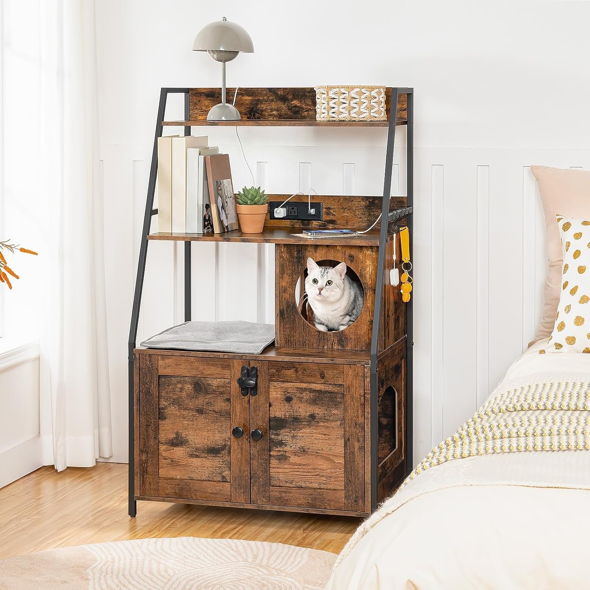 |
Hoobro | ✗ | ✗ | ✓ | ✓ |
Budget $115 |
|
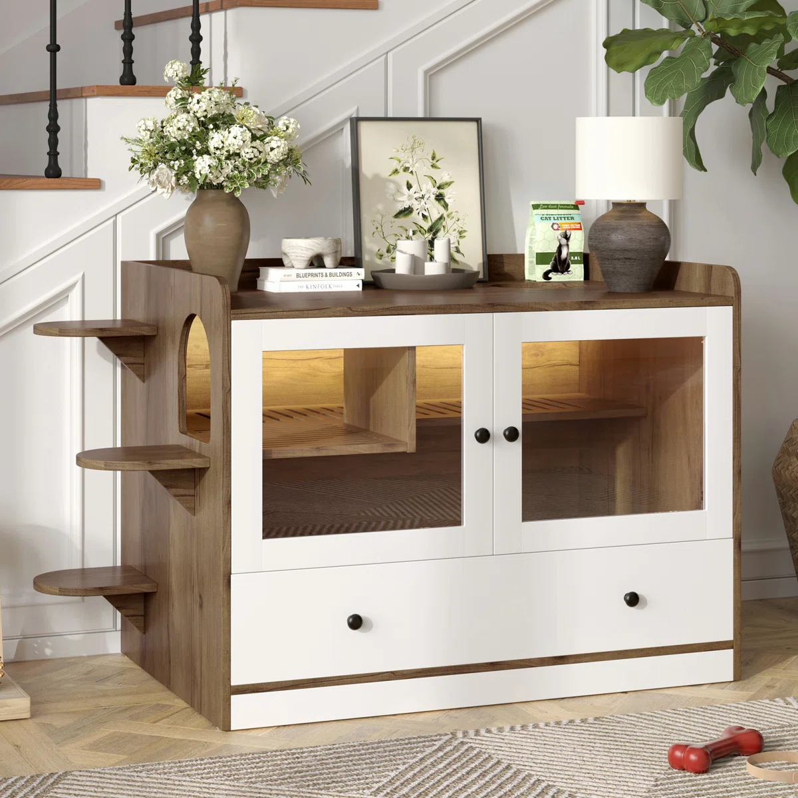 |
Ebern Designs | ✗ | ✗ | ✓ | ✗ |
Mid $250 |
|
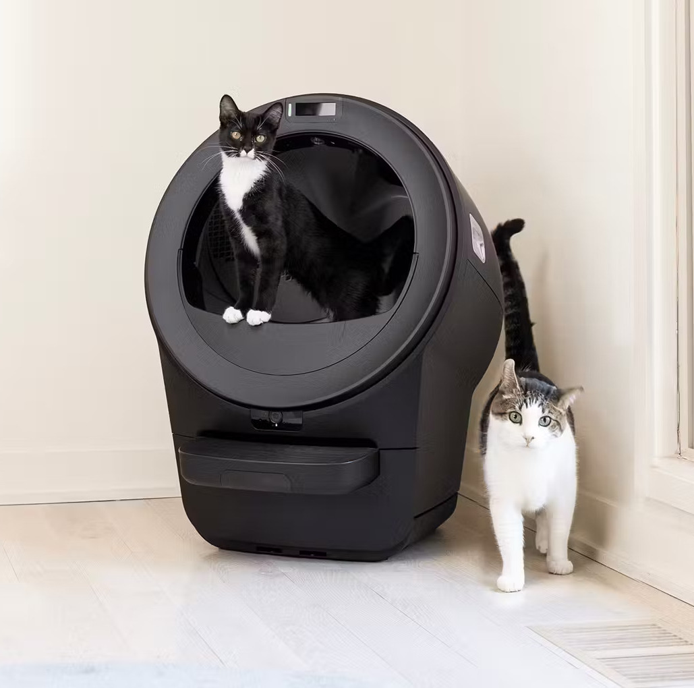 |
Litter-Robot (automatic) | ✗ | ✓ | ✗ | ✗ |
Premium $600–900 |
|
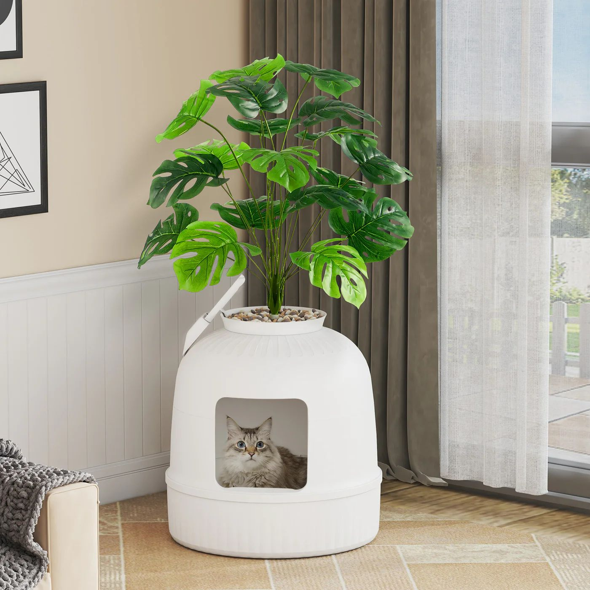 |
Lifewit | ✗ | ✗ | ✗ | ✗ |
Budget $70 |
|
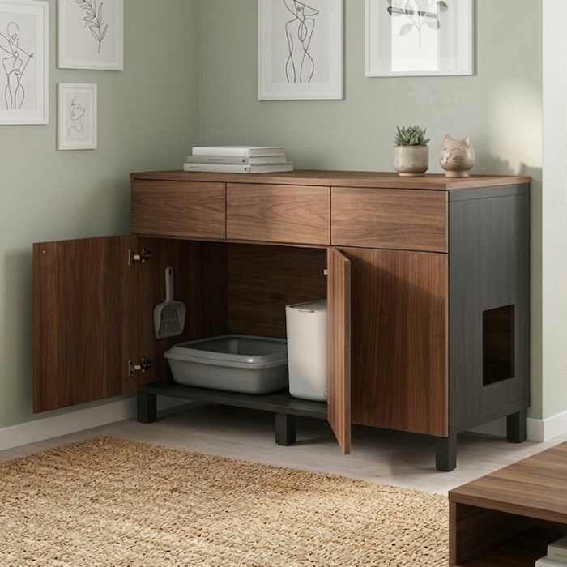 |
This design | ✓ | ✓ | ✓ | ✓ |
Premium $549 |
Most enclosures solve one thing: hiding the litter box. No competitor addresses waste bin storage. A few address litter tracking, but a single straight corridor isn't enough. Some offer extra storage but it's rarely enclosed. The Litter-Robot handles waste automatically but costs $600–900, requires power, reads as an appliance, and still needs a mat at the exit — litter tracking is an unsolved problem regardless of how automated the box is. Tucker Murphy Pet comes closest, but leaves the waste bin exposed and the exit path too short to prevent tracking.
Research & Discovery
Constraints worth engineering around
Before sketching anything, I established the non-negotiable dimensional and ergonomic requirements — for the cat, for common cleaning hardware, and for the space itself.
Design constraints
Must fit a large litter box
The interior chamber needed to accommodate a large litter box — approximately 56cm × 46cm × 25cm (22″ × 18″ × 10″). This set the minimum interior width, depth, and headspace of the litter compartment.
Must accommodate a litter waste bin
The Litter Genie and Litter Zero are the most common dedicated litter waste bins, with a footprint of approximately 27cm × 27cm (10.5″ × 10.5″). Their dimensions set the minimum additional space needed alongside the litter box. This was non-negotiable — it was the core gap the entire design was built to close.
The cat must be able to find and use the litter box without hesitation
If the entry path is confusing, physically demanding, or discouraging in any way, cats will eliminate elsewhere. The corridor geometry, entry aperture, and step-over height all had to meet feline ergonomic minimums for instinctive, frictionless use. A cat who is unsure or uncomfortable will not use it — and no design feature compensates for that failure.
No litter tracking beyond the exit
"Reduce litter tracking" is not a measurable constraint — path length is. Peer-reviewed feline locomotion research records domestic cat stride lengths of 36–47 cm at a normal walking pace, with each step (individual paw placement) covering roughly 9–12 cm of ground. A straight corridor fails regardless of length: cats traverse it in a few strides without decelerating, and litter clings through the exit. Sufficient mechanical dislodgment requires a minimum of 12 steps — equivalent to three full stride cycles (108–144 cm).
Must be indistinguishable from standard furniture at a glance
No visible cat-themed elements or cutout shapes that signal the product's purpose. From the front, it must pass as a credenza or sideboard. The only permitted visual signal of its function is the cat entry aperture. Everything else is furniture.
Must fit in a small home — minimal footprint, full functionality
The target user lives in a shared home with limited floor space. Every square inch the enclosure occupies has to earn its place. The design was sized to the smallest viable footprint that still satisfied C1 through C5 — no dimension was generous by default.
Surplus storage — useful beyond cat ownership
The enclosure had to justify its footprint to everyone in the household, not just the cat owner. Drawers, shelves, or cabinet space for household items make the piece furniture first, cat product second. This is also what allows it to live in a living room rather than a utility room.
Ventilation without visible grilles
An enclosed litter area traps ammonia from cat waste, which can discourage use and is a health concern over time. The enclosure needed a passive ventilation path that didn't introduce visible cutouts or grilles on any external face. The solution had to be hidden — functional without being visible.
Modular — swappable finishes, legs, and faces
IKEA's success is partly built on mix-and-match modularity: owners personalise their furniture without replacing the whole piece. This design follows the same principle — tabletop, door faces, drawer fronts, and leg height are all independently swappable. This expands the addressable market without increasing manufacturing complexity, and is the lowest-priority constraint since the core design functions fully without it.
Feline ergonomics
Interior dimensions were derived from published feline morphology data and veterinary litter box guidelines. Cited clinical sources inform the walk-over and corridor requirements; headspace and step-down figures are derived from average domestic cat anatomy.
| Requirement | Spec (in) | Spec (cm) | Rationale |
|---|---|---|---|
| Litter box headspace | ≥ 16″ | ≥ 40 cm | Minimum compartment height for squatting, turning, and partial periscoping — litter depth (~7 cm) + cat upright squat height (~25–30 cm) + clearance margin (~8 cm) |
| Corridor width | ≥ 8″ | ≥ 20 cm | Minimum width to accommodate shoulder span (~12–18 cm) and whisker clearance without tactile overstimulation |
| Corridor height | ≥ 11″ | ≥ 28 cm | Minimum clearance for natural walking posture without crouching — shoulder height on all fours (23–25 cm) + head clearance (~5 cm) = ~28–30 cm |
| Walk-over height | ≤ 5″ | ≤ 12.5 cm | Maximum step-over height for senior and mobility-limited cats |
| Exit step-down height | ≤ 5″ | ≤ 12.5 cm | Maximum drop from enclosure floor to ground — higher drops increase peak forelimb load on descent and can discourage box use in senior and arthritic cats |
User insights
Litter tracking is universal regardless of litter type. Fine-grain clays and crystals cling to paws and spread throughout a home; heavier pellets drop closer to the exit but still scatter. The standard fix is a mat — but the mat only shifts the problem. It wastes floor space, creates an obstacle, and becomes another surface to clean.
When off-the-shelf options fall short, owners turn to DIY — cutting cat doors into unused closets or drilling holes into IKEA shelving. These solutions work, but they require time, tools, and a willingness to modify your home.
The root problem is that no product on the market fully contains the litter setup and passes as real furniture. I went through every stage of this myself. The design in this case study is what I wish had existed from the start — so new cat owners don't have to spend the time and money finding out the hard way.
Who This Is For
The primary user
This design is grounded in personal experience. I'm the target user — a cat owner who has cycled through every common solution and found each one lacking in a different way. The persona below is drawn directly from that experience, not extrapolated from demographics.
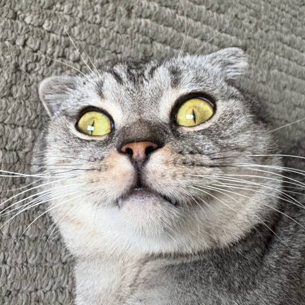
The Cat Owner Who Has Already Tried Everything
25 · Living with family · Townhome · Two cats · Tofu litter
"It feels like the whole category is built to look like a solution without actually being one."
I switched to tofu litter specifically to reduce tracking — it helped, but I still find pieces several feet away a few times a week. I can't put a mat at the exit because one of my cats pees on it. The enclosure I own has a drawer that's half dead space, and no room for the waste bin — something I didn't think about until after buying it. Every furniture company just shows the litter box; no one shows where the waste bin goes. So the bin sits outside: an eyesore, and another thing to step around.
When I moved back home after college, my parents allowed me to adopt cats — something I don't take lightly. Every piece of litter on the floor, every obstacle in a shared hallway, is someone else's problem to deal with. The cat setup had to work with the home, not against it.
The Solution
One piece. Four problems solved.
The design is a furniture-grade enclosure with a clean top surface, neutral material finish, and no cat-signaling aesthetic cues. From the outside, it reads as a credenza or hallway cabinet. Inside, it contains an engineered system for every problem the existing market ignores.
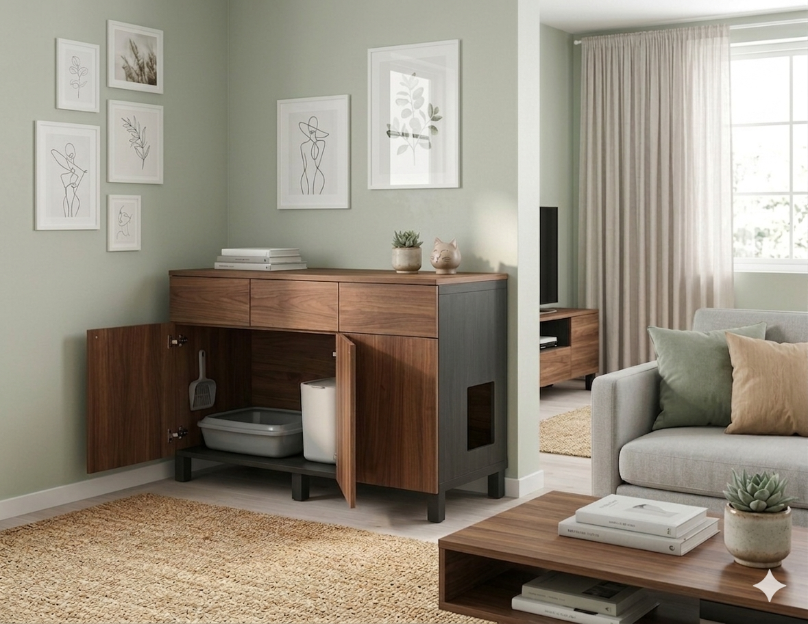
Concept render — interior visible with example litter box and waste bin setup.
Ideation & early decisions
Three layout concepts were developed and evaluated against the nine design constraints before committing to a design.
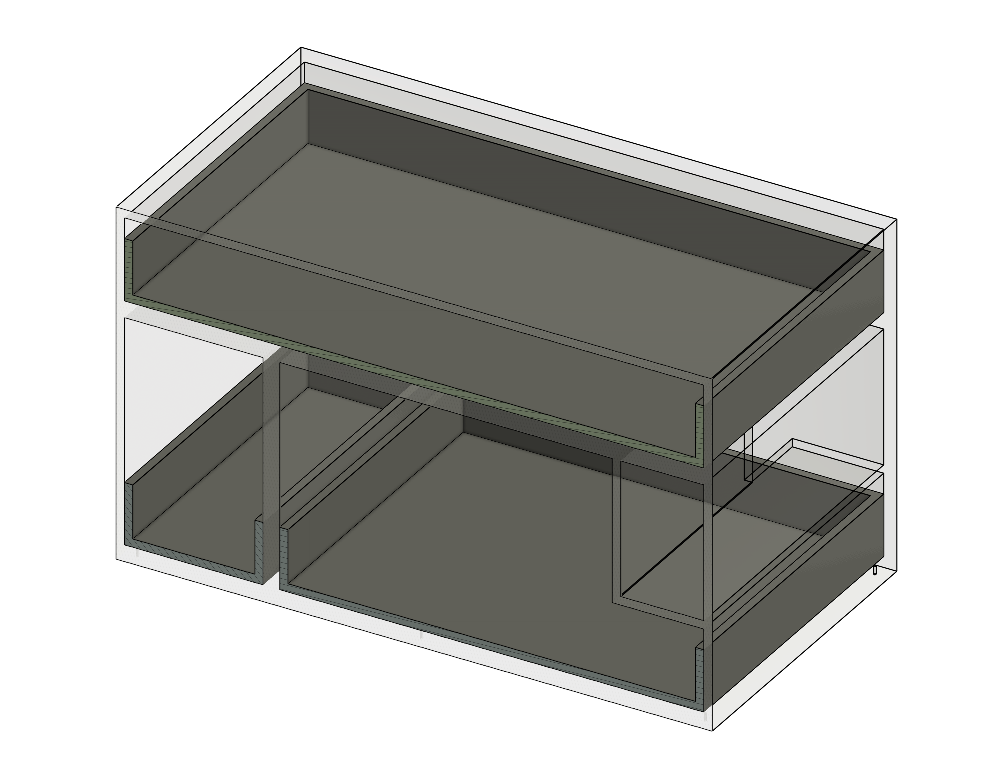
Option A — Rejected Smaller footprint with front entry and vertical drawer stack.
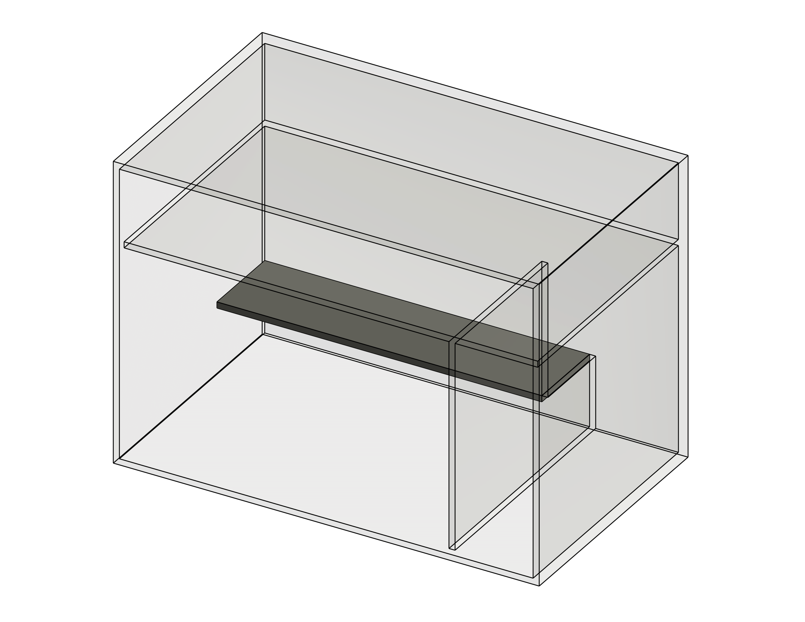
Option B — Rejected Smaller footprint with raised rear catwalk over litter box.
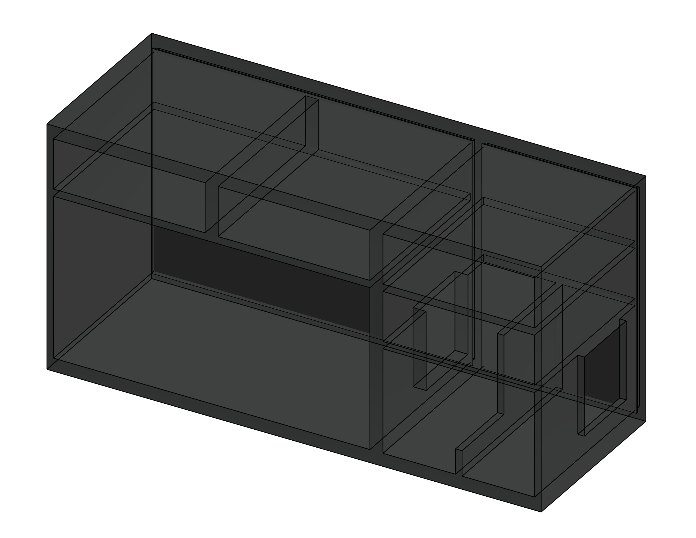
Option C — Chosen Expanded footprint with U-shaped maze and four storage sections.
Option A explored a front cat entry and a slide-out litter box tray at the base. Rejected — the door arrangement was structurally awkward, the walkway lacked support, and it became clear a dedicated waste bin compartment added unnecessary complexity.
Option B targeted a smaller footprint with no waste bin compartment, adding a raised catwalk over the litter box to capture litter passively. Rejected — the catwalk blocked litter box access at low heights, and raising it created a drop steep enough that cats would kick litter on the jump. The entry zone also left significant unusable dead space regardless of shelving.
Option C expands the footprint deliberately: a U-shaped maze creates three forced direction changes before exit, depositing litter inside the enclosure rather than outside. The additional volume is distributed across four storage sections with no wasted space. It is the largest of the three concepts — and the only one that satisfies every constraint without compromise.
The trade-off is footprint. The U-shape adds width. But the calculus is clear: it is far preferable to vacuum a contained corridor than to chase litter all over your home.
Define the full problem scope
Before sketching, I listed every object in a typical cat owner's litter setup: box, enclosure, mat, waste bin, scooper, cleaning supplies. The design brief became: contain all of it in one piece of furniture.
Establish non-negotiable constraints
Nine constraints were locked before any layout decisions, ordered by priority: litter box size, waste bin dimensions, cat accessibility, measurable corridor geometry for litter trapping, furniture aesthetics, footprint, owner storage, ventilation, and modularity. These drove every dimension in the CAD model rather than being retrofitted later.
Solve litter tracking geometrically
The maze corridor emerged from asking: what if the exit path itself were the litter mat? A straight tunnel was ruled out — cats can exit in 1–2 leaping strides. A top-entry hatch was ruled out for accessibility and because litter still cascades out on exit. The U-shape was chosen to force direction changes and maximize steps inside the enclosure.
Model in Onshape
With layout logic validated, the full design was modelled in Onshape. Panel thicknesses were set to match IKEA standard furniture-grade particleboard. All interior clearances were verified against the feline ergonomics table before finalizing dimensions.
Assembly & construction
The CAD model was developed with assembly clarity in mind — each component is a discrete panel or sub-assembly that maps to a logical build sequence.
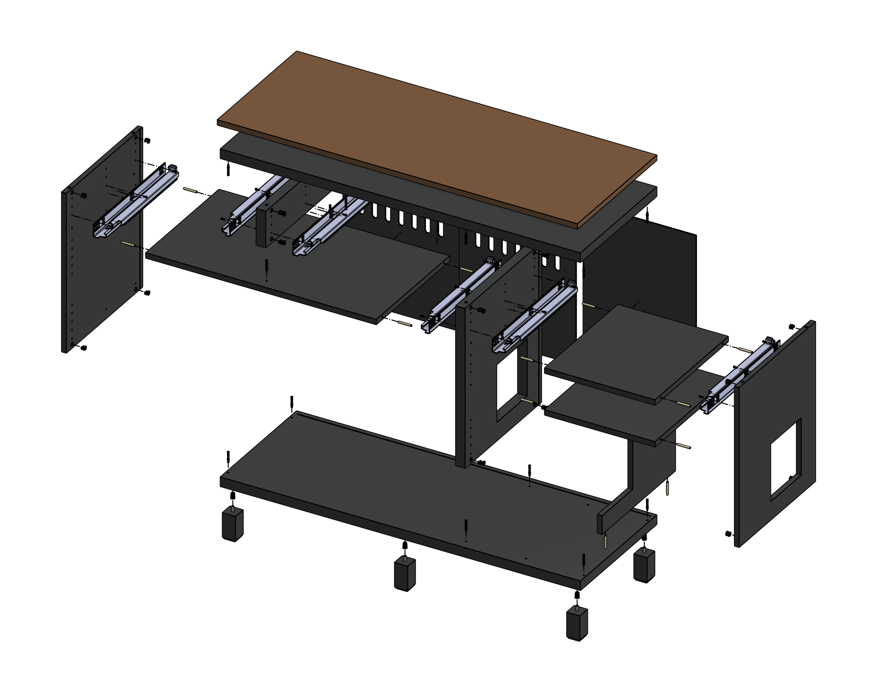
Exploded view of furniture showing how every piece fits together.
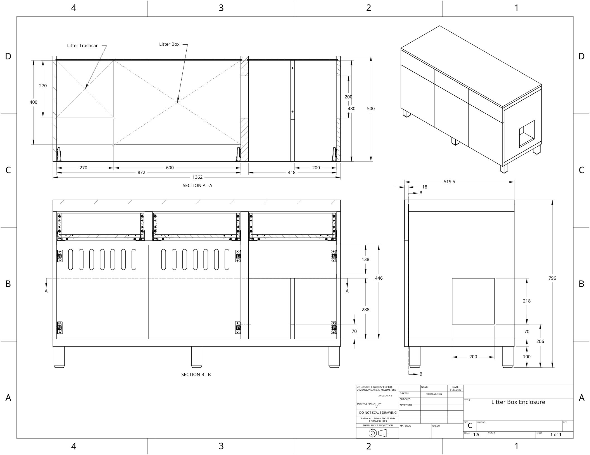
Dimensioned CAD drawing.
The enclosure is built from particleboard joined via cam-lock hardware for flat-pack assembly — the same construction method as IKEA's cabinet lines. The design shares IKEA's core principle: well-made, functional furniture that is affordable to as many people as possible, with surfaces that are individually swappable rather than requiring a full replacement.
Bill of materials
Every component in the design — panels, fasteners, cam-locks, hinges, drawer slides, legs, and screws — is fully specified in the Onshape model. Each part is parametric, meaning a change to a panel thickness or leg height propagates through the entire assembly automatically.
| # | Component | Material / Spec | Qty | Notes |
|---|---|---|---|---|
| 1 | Back Panel Large | 3mm High-Density Fiberboard (HDF) | 1 | — |
| 2 | Back Panel Small | 3mm HDF | 1 | — |
| 3 | Bottom Panel | 36mm Medium-Density Fiberboard (MDF) | 1 | — |
| 4 | Column 1 | 18mm Particleboard | 1 | — |
| 5 | Column 2 | 36mm Particleboard | 1 | — |
| 6 | Column 3 | 36mm Particleboard | 1 | — |
| 7 | Column 4 | 18mm Particleboard | 1 | — |
| 8 | Column 5 | 18mm Particleboard | 1 | — |
| 9 | Top Panel | 36mm Particleboard | 1 | — |
| 10 | Bottom Shelf Small | 20mm Particleboard | 1 | — |
| 11 | Top Shelf Large | 20mm Particleboard | 1 | — |
| 12 | Top Shelf Small | 20mm Particleboard | 1 | — |
| 13 | Tabletop | 20mm Particleboard | 1 | Swappable for different colors and styles |
| 14 | Drawer Runner, Right | Steel, Full-extension | 3 | Blum 563H4570B |
| 15 | Drawer Runner, Left | Steel, Full-extension | 3 | Blum 563H4570B |
| 16 | Drawer Face | 18mm Particleboard | 3 | — |
| 17 | Drawer Back Wall | 18mm Particleboard | 3 | — |
| 18 | Drawer Support Bar | 16mm Particleboard | 3 | — |
| 19 | Drawer Base | 3mm Particleboard | 3 | — |
| 20 | Drawer Side Wall | 18mm Particleboard | 6 | — |
| 21 | Drawer Locking Device, Right | Plastic | 3 | Blum T51.1901.PS |
| 22 | Drawer Locking Device, Left | Plastic | 3 | Blum T51.1901.PS |
| 23 | Door | 18mm MDF | 3 | — |
| 24 | Door Hinge | 35mm Cup Hinge, Soft-close | 6 | Blum 71B3550 |
| 25 | Leg | Solid Wood | 6 | IKEA STUBBARP |
| 26 | 28mm Cam Dowel | Zinc Alloy | 40 | — |
| 27 | 11.5mm Cam Lock | Zinc Alloy | 32 | — |
| 28 | 18.5mm Cam Lock | Zinc Alloy | 8 | — |
| 29 | 6mm×50mm Dowel Peg | Hardwood | 14 | — |
| 30 | 6mm×30mm Dowel Peg | Hardwood | 26 | — |
| 31 | Flat Head Screws for Particleboard | Black-Oxide Steel, #6 Size, 1-1/8" | 12 | — |
| 32 | Rounded Head Screws for Plywood | Zinc-Plated Steel, #6 Size, 1/2" | 42 | — |
| 33 | Tapping Inserts for Softwood Flanged | Zinc Alloy M8 × 1.25mm Thread, 20mm Installed Length | 6 | — |
U-shaped maze corridor
A straight corridor fails — at 36–47 cm per stride, 12 steps requires 108–144 cm, consuming too much of the overall footprint. The U-shape introduces three forced direction changes; each pivot decelerates the cat and adds 2–4 steps that a straight path of the same length would never achieve. The rightmost door opens directly into the maze, giving easy access for cleaning.
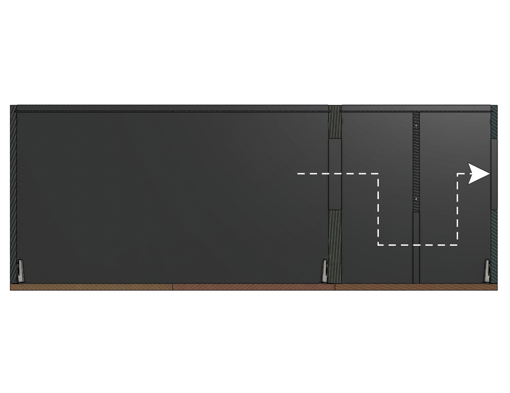
Intended exit path (white arrow). In practice cats tend to cut the corners, taking a more diagonal line — which still requires direction changes and floor contact throughout.
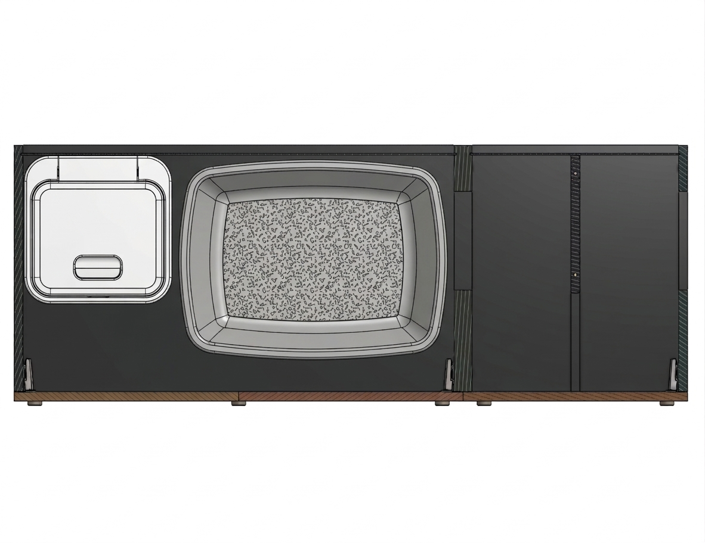
Sample layout of litter box and waste bin setup.
Waste bin accommodation
Every competing enclosure hides the litter box and leaves the waste bin sitting in the open. This design accounts for it from the start — space is allocated inside the main compartment to fit a litter waste bin alongside the litter box. The bin lives inside the enclosure, behind the two left doors, out of sight.
Generous owner storage
No volume is wasted. Four enclosed storage areas — three drawers at the top and one shelf above the maze — give back the floor space the enclosure takes. Each drawer fits over 60 small wet food cans with room to spare. In practice that means cat supplies, cleaning tools, or anything else you'd otherwise leave on a shelf. The enclosure earns its footprint in both directions.
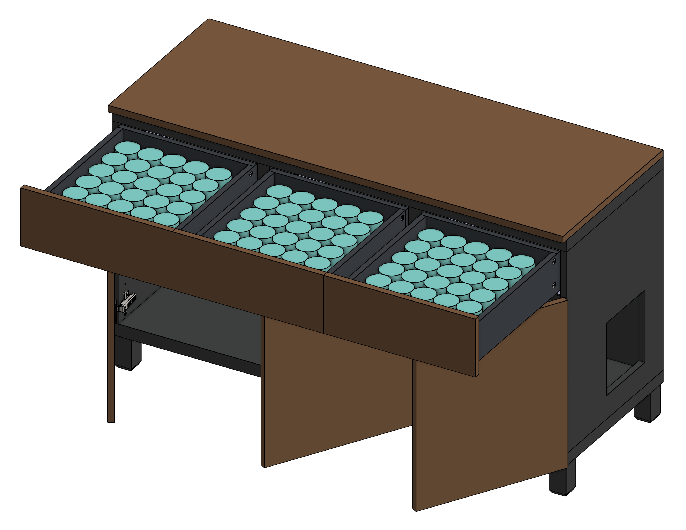
All drawers and doors open with sample occupied storage areas.
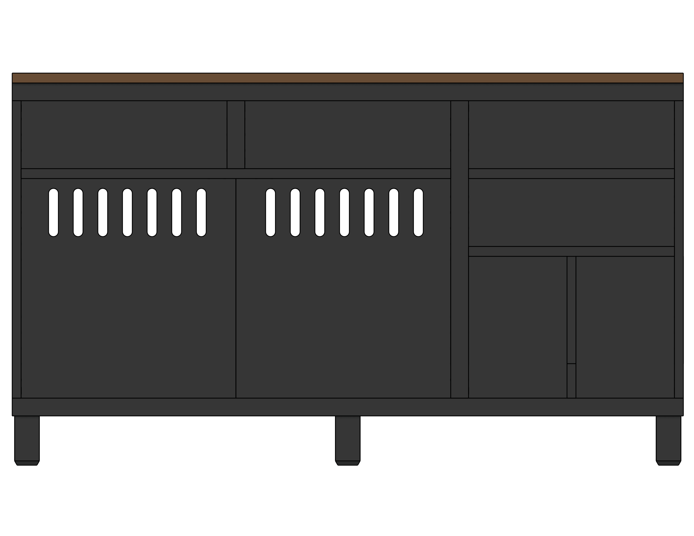
Front view — ventilation holes along the top of the back panel.
Passive ventilation
A row of ventilation holes runs along the top of the back panel, along with mounting holes on the interior column walls at the same height. These accept accessory trays for zeolite bags or loose charcoal, absorbing ammonia without powered fans or visible grilles. The vents sit behind the furniture — no aesthetic compromise.
Designed to last
Push-to-open latches keep the entire front face flush and handle-free — or swap in handles and knobs if you prefer. The result reads as furniture — Japandi, Scandinavian, or contemporary — not as a cat product. The only visible signal of its function is the cat entrance on the right side panel.
Every visible surface is independently swappable. Tired of the finish? Replace the door faces. Cat gets older and needs lower entry? Remove the legs. Want clearance for a robot vacuum underneath? Swap to taller legs. The cabinet body stays — only what needs to change does. That's what separates a considered design from a product you replace in three years.
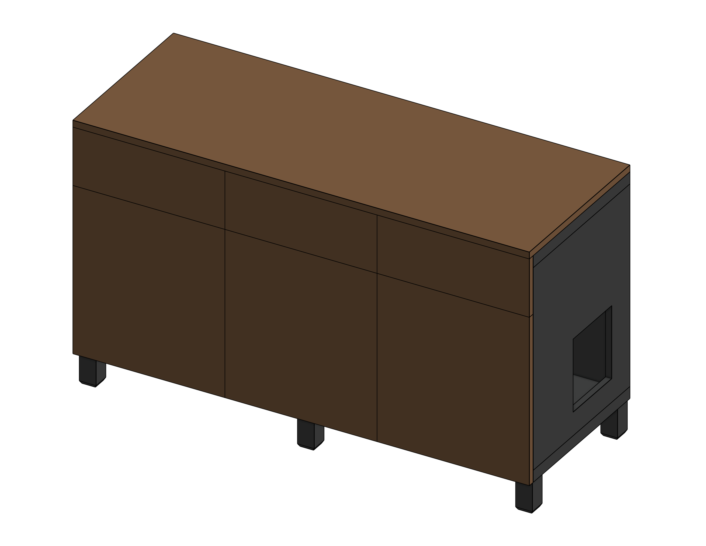
Isometric view of complete design.
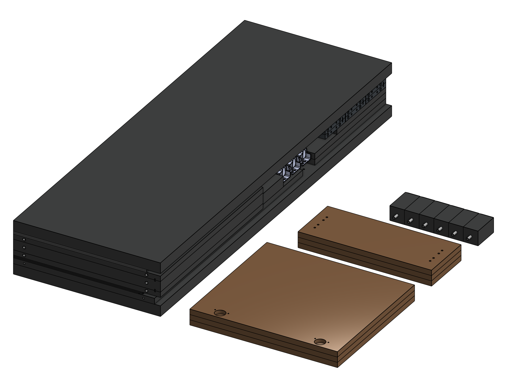
Flat-pack configurations.
Flat-pack and modular assembly
The enclosure ships flat-pack. Structural panels — the cabinet body, shelves, and internal maze walls — ship together. Door faces, drawer fronts, the tabletop, and legs ship separately, letting buyers choose their own finish combination before assembly.
This mirrors IKEA's model: the core structure is fixed, but every visible surface is swappable. A buyer can start with a white oak top and natural legs, and update the door faces two years later without replacing the whole piece.
Design specifications
| Parameter | Value | Meets | Notes |
|---|---|---|---|
| Approximate footprint | 126 × 52 × 80 cm | C6 ✓ | Smallest viable footprint satisfying C1–C5 |
| Interior litter headspace | 45 cm | C1, C3 ✓ | ≥ 40 cm minimum |
| Maze height | 29 cm | C3 ✓ | ≥ 28 cm minimum |
| Maze corridor width | 20 cm | C3 ✓ | ≥ 20 cm minimum |
| Maze centerline path length | 83 cm (U-path), 59 cm (V-path diagonal) | C4 ✓ | ≥ 12-step minimum — 3 turns add ~8 steps + V-path adds ~6 steps = ~14 total steps |
| Entrance height | 10 cm (without legs) | C3 ✓ | ≤ 12.5 cm maximum |
| Litter box capacity | 57 × 47 cm footprint | C1 ✓ | ≥ 56 × 46 cm minimum |
| Waste bin capacity | 27 × 27 cm footprint | C2 ✓ | ≥ 27 × 27 cm minimum |
| Front face | Push-to-open, no handles, side entry only | C5 ✓ | No visible cat-themed elements from the front — reads as a credenza |
| Owner storage | 3 drawers + 1 shelf | C7 ✓ | Justifies footprint to all household members, not just the cat owner |
| Ventilation | Passive — concealed back-panel vents | C8 ✓ | — |
| Leg height | Short (5 cm), standard (10 cm), tall (15 cm) | C9 ✓ | Swappable — affects entry step-up height and ground clearance |
| Assembly method | Flat-pack, cam-lock hardware | C9 ✓ | — |
| Modeled in | Onshape — fully parametric | — | All panels, hardware, and fasteners specified |
| Bill of materials | 33 components | — | Every screw, cam-lock, and bracket with part number and quantity |
Market Opportunity
Why this product has a clear path to market
The automatic litter box market — products like Litter-Robot — has proven that cat owners will pay a significant premium to reduce daily maintenance. This design targets the same buyer at a lower price point, without requiring power, connectivity, or proprietary consumables.
The aesthetic positioning opens a distribution channel no current litter enclosure occupies: the home furnishing aisle. IKEA, West Elm, and Crate & Barrel already sell furniture to the exact demographic who owns cats and cares how their home looks. No litter product currently lives in that aisle. The global pet furniture market is already a $7.95B category growing toward $12.44B by 2033 — this design sits at the intersection of that market and the litter enclosure segment no product has claimed.
The right price comparison isn't other litter enclosures — it's furniture. A buyer isn't choosing between a $190 and a $549 litter cabinet. They're choosing between a $695 BESTÅ sideboard that does nothing for their cat, and a $549 piece that replaces the sideboard and solves every part of the litter problem.
As a construction reference: stripping a comparable IKEA BESTÅ combination ($695) of components that don't apply — glass doors and shelves — and adjusting for this design's footprint puts an equivalent IKEA-tier build at roughly $500–550.
Reflection
What this project taught me
The insight
The most important design decision wasn't aesthetic — it was the maze geometry. A straight path felt like the obvious choice for cat accessibility. Rethinking it as a litter-capture mechanism changed the entire interior layout. The constraint became the feature.
Systems thinking
Existing products were designed around a single pain point. Designing around the entire ecosystem — litter, waste, storage, ventilation, cat accessibility, and owner aesthetics — produced a solution that no individual feature could have reached on its own.
The gap in the market
The research confirmed that no product in this category publishes a diagram showing where the waste bin goes. That omission isn't an oversight — it reflects a fundamental scoping decision that every existing product has made. Expanding that scope was the project.
If I had more time
A physical prototype would validate the maze corridor dimensions against real cats — specifically whether the U-turn geometry eliminates litter tracking with any litter type. I'd also like to explore a shorter front-entry variant for tight spaces, a multi-cat variant, and a taller interior clearance option for larger automatic litter boxes — a natural product lineup — all without compromising functionality or aesthetics.
Sources
References
| Claim | Source |
|---|---|
| Domestic cat stride length (36–47 cm at normal walking pace) | Beloozerova et al., Head Movement During Walking in the Cat, PMC4986613 (2016) |
| Domestic cat shoulder height (23–25 cm) | Wikipedia, Cat — citing zoological morphology data |
| Corridor height standard for adult cats (20 cm) | Iwabuchi-Inoue et al., Litter box size and litter type preference and their associated behavioral changes in cats, PMC12169895 (2025) |
| Feline litter box headspace and ergonomic minimums (adult and senior cats) | AAHA–AAFP Feline Life Stage Guidelines (2021); AAFP Senior Care Guidelines (2009, via PMC) |
| BESTÅ storage combination pricing and construction reference ($695) | IKEA.com — BESTÅ Storage combination with doors, verified April 2026 |
| Competitor pricing and feature data | Amazon, Chewy, and Wayfair product listings, verified April 2026 |
| US pet industry revenue (~$158B in 2025) | APPA, 2026 State of the Industry Report |
| Cat-owning households in the US (~49M in 2024) | APPA, 2025 State of the Industry Report |
| Global pet furniture market size (~$7.95B in 2026) | Coherent Market Insights, Global Pet Furniture Market Size & Trends 2026–2033 |